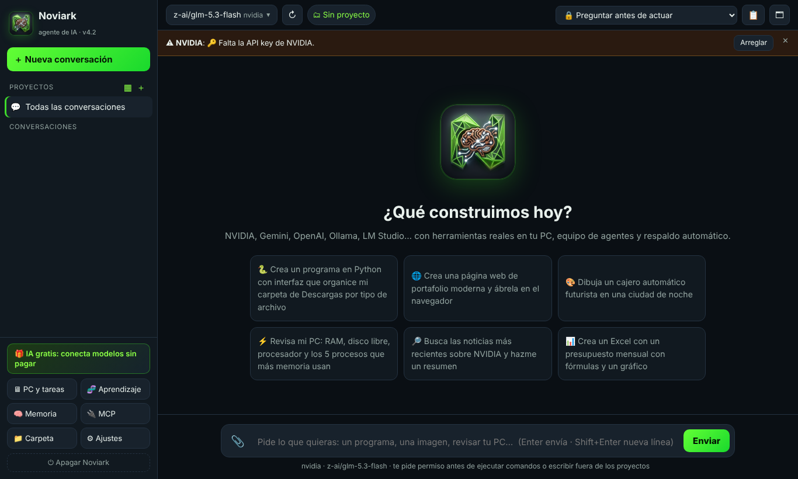
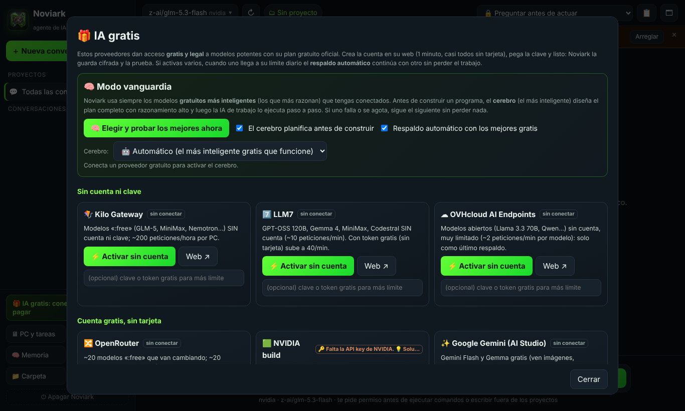
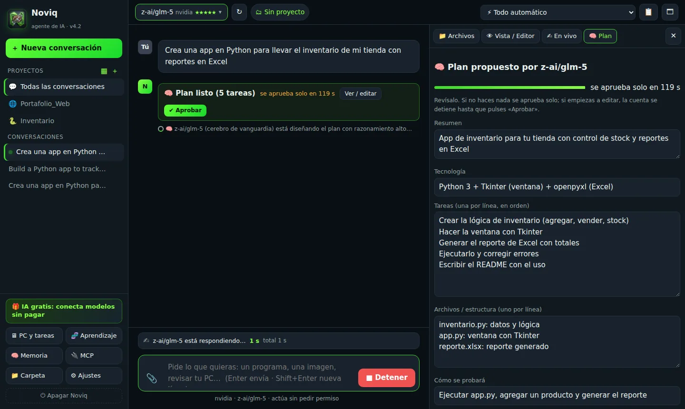
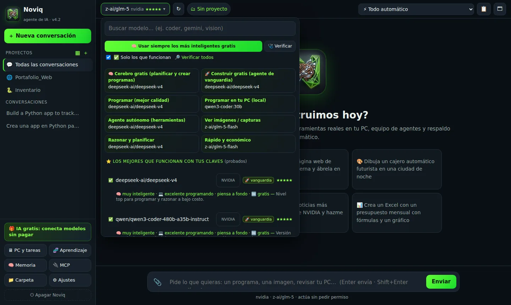
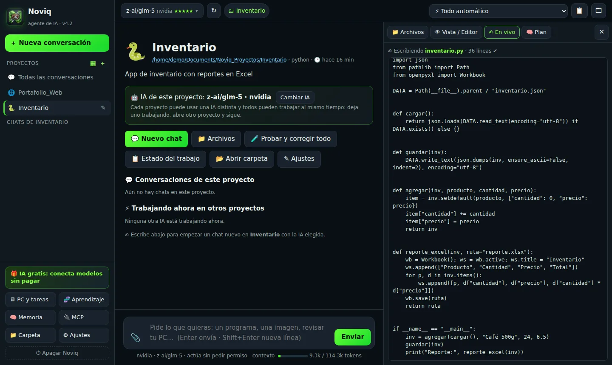

NoviArk
Agente de IA que escribe, ejecuta, prueba y corrige programas en tu computadora.
Ejecutar
Necesitas Python 3.10 o superior. Todavía no hay instaladores publicados: se ejecuta desde el código.
git clone https://github.com/JUXN1988/noviark.git
cd noviark
# Windows: doble clic en iniciar.bat
# Linux / macOS:
bash iniciar.shLuego entra en Ajustes → Proveedores y claves, pega la API key de un proveedor (o conecta Ollama / LM Studio) y empieza a conversar.
Capturas






Qué hace
40 herramientas
Archivos, búsqueda en el código, PowerShell, Python, Linux, procesos, HTTP, búsqueda y lectura web, imágenes, captura de pantalla, navegador automatizado y más.
Plan antes de actuar
Puedes editar o aprobar el plan. Si no haces nada, se aprueba solo tras una cuenta regresiva.
Se prueba a sí mismo
diagnosticar revisa el proyecto con archivo y línea; probar_web prueba webs y juegos en un navegador invisible.
Guardián de razonamiento
Si un modelo piensa demasiado sin actuar o entra en bucle, NoviArk lo corta y lo obliga a actuar.
Escalado al modelo más capaz
Si el agente se atasca, el trabajo pasa al modelo más capaz que tengas habilitado.
Trabajo que no se pierde
Guarda objetivo, plan, lo hecho y los errores. Si un modelo falla, el siguiente continúa desde ahí.
IA local
Ollama y LM Studio, con el contexto ajustado a la memoria de tu equipo. Tu código no sale de tu PC.
Seguridad
Modos de permiso, copias y puntos de restauración, borrado a la Papelera, escáner de secretos y bóveda de claves (cifrada con DPAPI en Windows).
Proveedores y MCP
NVIDIA, Gemini, OpenAI, Anthropic, OpenRouter, Groq y más. Servidores MCP con el mismo formato que Claude Desktop.
El avatar (noviq-avatar)
Un robot que vive encima de tus programas, con fondo transparente. Tiene su propia mente, memoria, voz y oído, y puede usar las herramientas de NoviArk cuando está abierto.
| Estado | Qué hace el robot |
|---|---|
| 👋 Saluda | Se presenta y saluda cuando lo abres. |
| ✍️ Trabaja | Pone cara de concentrado cuando NoviArk empieza un trabajo y escribe en su panel. |
| 🛠 Usa herramientas | Muestra un icono en su visor según la herramienta: código, lupa, terminal o web. |
| ❓ Pide permiso o ayuda | «Necesito tu permiso…» o «Necesito tu ayuda…», y le respondes hablando. |
| ✅ Termina | Dice «¡Ya terminé!» y pregunta qué más hacemos. |
Además: permisos por voz (responde sí o no sin decir su nombre), tareas a la vista con barra de progreso, API compatible con OpenAI y servidor MCP.
Comentarios y sugerencias
Como el proyecto está en actualización, tu opinión ayuda mucho.
🐞 Reportar un error 💡 Proponer una mejora 📋 Ver issues abiertosLicencia
NoviArk se distribuye bajo la Noviark Community License 1.0. Es gratis para uso personal, educativo, de investigación y sin fines de lucro. Las empresas pueden evaluarlo hasta 60 días; el uso comercial continuado requiere licencia comercial. El avatar (noviq-avatar) tendrá su licencia definida aparte.
Leer la licencia completa · Hoja de ruta · Historial de cambios